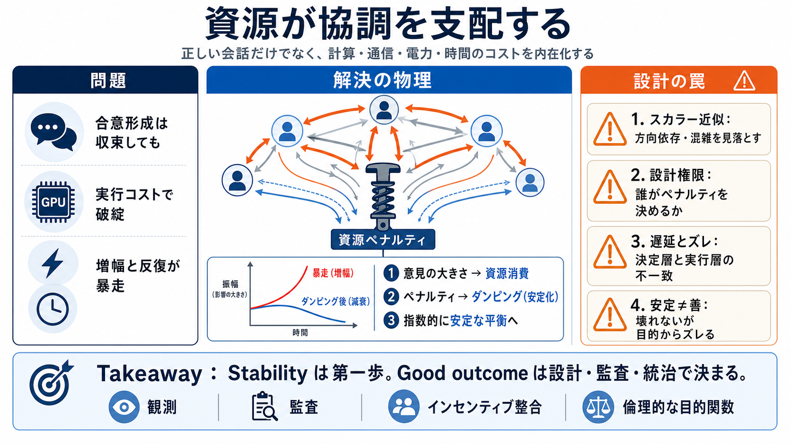

よくある焦点
合意形成アルゴリズム / ロジック

エージェント協調の成否は「正しい会話」よりも、「コストをどこまで内部化して暴走を抑えるか」で決まる。
合意形成を“手順”として最適化しても、計算・通信・電力・時間が有限なら、増幅や反復は必ず破綻に向かう。
合意形成アルゴリズム / ロジック
会話は収束→実行でコスト破綻
意見の強さを“資源消費”と結びつけ、有限性を減衰項として入れる。そうすると暴走が抑えられる。
意見の大きさ → コスト（GPU・電力・通信・時間）
ペナルティ → “安定化の力”（damping / ダンピング）
合意形成を、影響ネットワーク上の状態更新（意見ダイナミクス）として捉える。安定性は“更新の物理”で決まる。
エージェント
相互通信 / 影響
意見（意志/決定の量）
効用最大化するエージェントに「資源ペナルティ項」を入れると、極端な増幅を抑え、弱い対立があるネットワークで（グローバルに）指数的に安定な平衡が得られる。
指数的に安定な平衡（global）
ペナルティなし→崩壊/底なし競争の最悪
次のフェーズは「相互通信を上手くすること」ではなく、「自分たちが消費する資源コストを見積もって守ること（＝ペナルティを内在化）」だ。
コミュニケーション最適化だけ
資源コストを予測し拘束する
ペナルティは強力だが、「スカラー近似」「作者の権限」「遅延」「目的の不一致」で現実には歪む。
方向依存（テンソル）や混雑、トポロジーで破綻し得る
ペナルティ値は設計パラメータなので「安定＝意図通り」と限らない
予測誤差・キャリブレーション・監査不足で実コストが跳ねる
壊れない平衡でも共通善まで保証しない
通信遅延や検証遅延が、状態の齟齬を蓄積させる。小さな窓（例：47ms）でも同期失敗につながる。
合意した“つもり”
コスト・制約が遅れて顕在化
ペナルティは定数ではなく、誰が定義し誰が負担するか（統治）や観測構造（監査）によって平衡が選別される。
チューニング権限 / 非対称負担
観測・検証があると“回避最適化”される
“遵守しているように見える”ことと“実際に資源を食っていない”ことは一致しない。予測誤差やキャリブレーションでギャップが生まれる。
観測（決定層）と消費（実行層）の不一致
ハードトリップ / 収束しても機能不全
安定性を実務に移すには、テンソル性（方向依存）、決定層/実行層ギャップ、監査とインセンティブ整合、目的関数の倫理まで踏み込む必要がある。
価格やクォータが内生的に揺れて振動を生む
監査回避 / 観測のゲーム化 / Byzantine jamming
誰がコスト関数を決めるかが結論を左右
使用量だけでなく、予測誤差・分岐速度を追跡
協調の崩れは“会話の弱さ”ではなく“資源コストの無限性”が原因になり得る。だから必要なのは、資源ペナルティの内在化と、その設計・監査・実行整合。
No references found